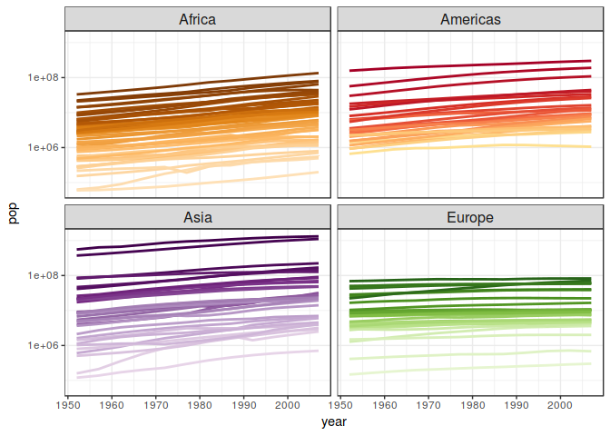

Data from the Web
Big picture
There are three ways to get data from the internet into R:
- Make API queries “by hand” using httr.
- Use an R package that wraps an API, such as the many from rOpenSci.
- Scrape the web.
Pick (at least) one of the exercises below. At least one prompt is given for each of the above approaches.
Due date: Thursday 07 December 2017.
General requirements
Reproducibility
- If your process involves obtaining some records (countries, species) at random, provide either the list of things chosen (id numbers, country codes etc.) OR use
set.seed()so that a peer could produce the same random sample.
Security
- Remember to protect any API keys or tokens, if your chosen API requires them! Don’t commit and push those to GitHub.
Practicality
- Be aware of rate limits on APIs when making repeated requests.
- Don’t download large data repeatedly during development. Consider breaking your work into separate scripts (e.g. download and analysis), using
makeor a makefile-like R script, or putting the download inside anif()statement that checks if the data already exists.
Reporting
- Do, or at least, report your work in an R Markdown document.
- What was most difficult? What are you most excited about in your future of getting data from the web? What questions did this raise in your mind?
Make API queries “by hand” using httr.
Create a dataset with multiple records by requesting data from an API using the httr package.
Inspiration for APIs to call
- From in-class activities (we’ll see this in the next lecture):
- Star Wars API: https://swapi.co
- API of Ice and Fire: https://anapioficeandfire.com
- OpenWeatherMap: https://openweathermap.org/api
- Open Movie Database: https://www.omdbapi.com
- Here is a huge list of APIs – you should have no trouble finding one you have some interest in!
GET() data from the API and convert it into a clean and tidy data frame. Store that as a file ready for (hypothetical!) downstream analysis. Do just enough basic exploration of the resulting data, possibly including some plots, that you and a reader are convinced you’ve successfully downloaded and cleaned it.
Take as many of these opportunities as you can justify to make your task more interesting and realistic, to use techniques from elsewhere in the course (esp. nested list processing with purrr), and to gain experience with more sophisticated usage of httr.
- Get multiple items via the API (i.e. an endpoint that returns multiple items at once) vs. use an iterative framework in R.
- Traverse pages.
- Send an authorization token. The GitHub API is definitely good one to practice with here.
- Use httr’s facilities to modify the URL and your request, e.g., query parameters, path modification, custom headers.
Scrape data
Work through the final set of slides from the rOpenSci UseR! 2016 workshop. This will give you basic orientation, skills, and pointers on the rvest package.
Scrape a multi-record dataset off the web! Convert it into a clean and tidy data frame. Store that as a file ready for (hypothetical!) downstream analysis. Do just enough basic exploration of the resulting data, possibly including some plots, that you and a reader are convinced you’ve successfully downloaded and cleaned it.
I think it’s dubious to scrape data that is available through a proper API, so if you do that anyway … perhaps you should get the data both ways and reflect on the comparison. Also, make sure you not violating a site’s terms of service or your own ethical standards with your webscraping. Just because you can, it doesn’t mean you should!
Use an R package that wraps an API
Many APIs have purpose-built R packages that make it even easier to get data from them.
If you choose one of these options, then you need to go further and combine two datasets, at least one of which is from the web.
Specific ideas
These were developed in 2015 by TA Andrew MacDonald
Prompt 1: Combine gapminder and data from geonames. Install the geonames package (on CRAN, on GitHub). Make a user account and use geonames to access data about the world’s countries. Use data from geonames and gapminder to investigate either of these questions:
- What is the relationship between per-capita GDP and the proportion of the population which lives in urban centers?
- Consider the following graph of population against time (a modification of Jenny’s gapminder demo):
library("ggplot2")
library("gapminder")
ggplot(subset(gapminder, continent != "Oceania"),
aes(x = year, y = pop, group = country, color = country)) +
geom_line(lwd = 1, show.legend = FALSE) + facet_wrap(~ continent) +
scale_color_manual(values = country_colors) + theme_bw() +
theme(strip.text = element_text(size = rel(1.1))) + scale_y_log10()
Replace population with population density. To do this, look up the country codes in geonames(), obtain the area of each country and compute density as population divided by area. TIP check out the handy package countrycode to help you merge country names!
Prompt 2: Look at two other rOpenSci packages: rebird and rplos. Both packages are on CRAN and more info is on their GitHub repo READMEs. Find out what data are available from each, and combine them! Here are three suggestions:
rplosandrebird– how many articles are published on a bird species?rplosandgeonames– Choose a subset of countries. How many papers have been published by people from that country? In that country? How does that relate to GDP?rebirdandgeonames– Do countries with more bird species also have more languages?
Prompt x: Look through the rOpenSci packages list and/or the CRAN Task View on Web Technologies and Services, find other wrapped APIs that interest you, and remix those instead.
Rubric
Recall the general homework rubric.
Peers and/or TAs will run the code and try to get the same output. You’ll be evaluated on the clarity and robustness of your workflow.
Peer Review
The peer review is ready and is due December 13, 2017 (before midnight)! Here’s what you’ll need to do:
- Find your github username in the table below. If it’s not there, let Giulio know! Slack me
@giulio. - Add the people who will be giving you a review as collaborators to the repo containing your homework submission.
- Give a review of this homework for the two people you’ve been assigned to. There should be an issue in their repo titled something like
hw0x ready for grading– put your review in there as a comment.- If there is no such issue, make one! (in their repo)
- Please don’t mix up your reviewers and reviewees!
** If you were assigned to a MISSING repo, please contact me @gvdr **
Check out the guidelines for giving a peer review.
| Your_github | Instructions |
|---|---|
| abishekarun | Please add vanflad and wswade2 as collaborators to your repo containing hw10. Please review the hw10 submission of rainerlempert and Shirlett. |
| Alexander-Morin | Please add emwest and mlawre01 as collaborators to your repo containing hw10. Please review the hw10 submission of yuanjisun and bcahn7. |
| AnhKhoaVo | Please add arsbar24 and hannahdxz as collaborators to your repo containing hw10. Please review the hw10 submission of suminwei2772 and emwest. |
| arsbar24 | Please add HScheiber and arthursunbao as collaborators to your repo containing hw10. Please review the hw10 submission of hannahdxz and AnhKhoaVo. |
| arthursunbao | Please add SonjaS1 and HScheiber as collaborators to your repo containing hw10. Please review the hw10 submission of arsbar24 and hannahdxz. |
| bcahn7 | Please add Alexander-Morin and yuanjisun as collaborators to your repo containing hw10. Please review the hw10 submission of margotgunning and zxkathy. |
| CassKon | Please add cheungamanda and heathersummers as collaborators to your repo containing hw10. Please review the hw10 submission of yanchaoluo and farihakhan. |
| cheungamanda | Please add ZimingY and Kozp as collaborators to your repo containing hw10. Please review the hw10 submission of heathersummers and CassKon. |
| dorawyy | Please add zxkathy and yidie as collaborators to your repo containing hw10. Please review the hw10 submission of hsmohammed and emilymistick. |
| emilymistick | Please add dorawyy and hsmohammed as collaborators to your repo containing hw10. Please review the hw10 submission of Mathnstein and ilgan. |
| emwest | Please add AnhKhoaVo and suminwei2772 as collaborators to your repo containing hw10. Please review the hw10 submission of mlawre01 and Alexander-Morin. |
| farihakhan | Please add CassKon and yanchaoluo as collaborators to your repo containing hw10. Please review the hw10 submission of Tangjiahui26 and vibudh2209. |
| gbraich | Please add qiaoyuet and rishadhabib as collaborators to your repo containing hw10. Please review the hw10 submission of ZimingY and Kozp. |
| hannahdxz | Please add arthursunbao and arsbar24 as collaborators to your repo containing hw10. Please review the hw10 submission of AnhKhoaVo and suminwei2772. |
| heathersummers | Please add Kozp and cheungamanda as collaborators to your repo containing hw10. Please review the hw10 submission of CassKon and yanchaoluo. |
| HScheiber | Please add KateJohnson and SonjaS1 as collaborators to your repo containing hw10. Please review the hw10 submission of arthursunbao and arsbar24. |
| hsmohammed | Please add yidie and dorawyy as collaborators to your repo containing hw10. Please review the hw10 submission of emilymistick and Mathnstein. |
| ilgan | Please add emilymistick and Mathnstein as collaborators to your repo containing hw10. Please review the hw10 submission of xinyaofan and xinmiaow. |
| jmurthy12 | Please add xinmiaow and menglinzhou as collaborators to your repo containing hw10. Please review the hw10 submission of wenzhengzzz and sepkamal. |
| juansbr7 | Please add peterwhitman and vmichalowski as collaborators to your repo containing hw10. Please review the hw10 submission of marbazua and swynes. |
| KateJohnson | Please add vibudh2209 and mattsada as collaborators to your repo containing hw10. Please review the hw10 submission of SonjaS1 and HScheiber. |
| Kozp | Please add gbraich and ZimingY as collaborators to your repo containing hw10. Please review the hw10 submission of cheungamanda and heathersummers. |
| marbazua | Please add vmichalowski and juansbr7 as collaborators to your repo containing hw10. Please review the hw10 submission of swynes and qiaoyuet. |
| margotgunning | Please add yuanjisun and bcahn7 as collaborators to your repo containing hw10. Please review the hw10 submission of zxkathy and yidie. |
| Mathnstein | Please add hsmohammed and emilymistick as collaborators to your repo containing hw10. Please review the hw10 submission of ilgan and xinyaofan. |
| mattsada | Please add Tangjiahui26 and vibudh2209 as collaborators to your repo containing hw10. Please review the hw10 submission of KateJohnson and SonjaS1. |
| menglinzhou | Please add xinyaofan and xinmiaow as collaborators to your repo containing hw10. Please review the hw10 submission of jmurthy12 and wenzhengzzz. |
| mlawre01 | Please add suminwei2772 and emwest as collaborators to your repo containing hw10. Please review the hw10 submission of Alexander-Morin and yuanjisun. |
| mylinhthibodeau | Please add santiagodr and yeonukkim as collaborators to your repo containing hw10. Please review the hw10 submission of peterwhitman and vmichalowski. |
| peterwhitman | Please add yeonukkim and mylinhthibodeau as collaborators to your repo containing hw10. Please review the hw10 submission of vmichalowski and juansbr7. |
| qiaoyuet | Please add marbazua and swynes as collaborators to your repo containing hw10. Please review the hw10 submission of rishadhabib and gbraich. |
| rainerlempert | Please add wswade2 and abishekarun as collaborators to your repo containing hw10. Please review the hw10 submission of Shirlett and santiagodr. |
| rishadhabib | Please add swynes and qiaoyuet as collaborators to your repo containing hw10. Please review the hw10 submission of gbraich and ZimingY. |
| santiagodr | Please add rainerlempert and Shirlett as collaborators to your repo containing hw10. Please review the hw10 submission of yeonukkim and mylinhthibodeau. |
| sepkamal | Please add jmurthy12 and wenzhengzzz as collaborators to your repo containing hw10. Please review the hw10 submission of vanflad and wswade2. |
| Shirlett | Please add abishekarun and rainerlempert as collaborators to your repo containing hw10. Please review the hw10 submission of santiagodr and yeonukkim. |
| SonjaS1 | Please add mattsada and KateJohnson as collaborators to your repo containing hw10. Please review the hw10 submission of HScheiber and arthursunbao. |
| suminwei2772 | Please add hannahdxz and AnhKhoaVo as collaborators to your repo containing hw10. Please review the hw10 submission of emwest and mlawre01. |
| swynes | Please add juansbr7 and marbazua as collaborators to your repo containing hw10. Please review the hw10 submission of qiaoyuet and rishadhabib. |
| Tangjiahui26 | Please add yanchaoluo and farihakhan as collaborators to your repo containing hw10. Please review the hw10 submission of vibudh2209 and mattsada. |
| vanflad | Please add wenzhengzzz and sepkamal as collaborators to your repo containing hw10. Please review the hw10 submission of wswade2 and abishekarun. |
| vibudh2209 | Please add farihakhan and Tangjiahui26 as collaborators to your repo containing hw10. Please review the hw10 submission of mattsada and KateJohnson. |
| vmichalowski | Please add mylinhthibodeau and peterwhitman as collaborators to your repo containing hw10. Please review the hw10 submission of juansbr7 and marbazua. |
| wenzhengzzz | Please add menglinzhou and jmurthy12 as collaborators to your repo containing hw10. Please review the hw10 submission of sepkamal and vanflad. |
| wswade2 | Please add sepkamal and vanflad as collaborators to your repo containing hw10. Please review the hw10 submission of abishekarun and rainerlempert. |
| xinmiaow | Please add ilgan and xinyaofan as collaborators to your repo containing hw10. Please review the hw10 submission of menglinzhou and jmurthy12. |
| xinyaofan | Please add Mathnstein and ilgan as collaborators to your repo containing hw10. Please review the hw10 submission of xinmiaow and menglinzhou. |
| yanchaoluo | Please add heathersummers and CassKon as collaborators to your repo containing hw10. Please review the hw10 submission of farihakhan and Tangjiahui26. |
| yeonukkim | Please add Shirlett and santiagodr as collaborators to your repo containing hw10. Please review the hw10 submission of mylinhthibodeau and peterwhitman. |
| yidie | Please add margotgunning and zxkathy as collaborators to your repo containing hw10. Please review the hw10 submission of dorawyy and hsmohammed. |
| yuanjisun | Please add mlawre01 and Alexander-Morin as collaborators to your repo containing hw10. Please review the hw10 submission of bcahn7 and margotgunning. |
| ZimingY | Please add rishadhabib and gbraich as collaborators to your repo containing hw10. Please review the hw10 submission of Kozp and cheungamanda. |
| zxkathy | Please add bcahn7 and margotgunning as collaborators to your repo containing hw10. Please review the hw10 submission of yidie and dorawyy. |